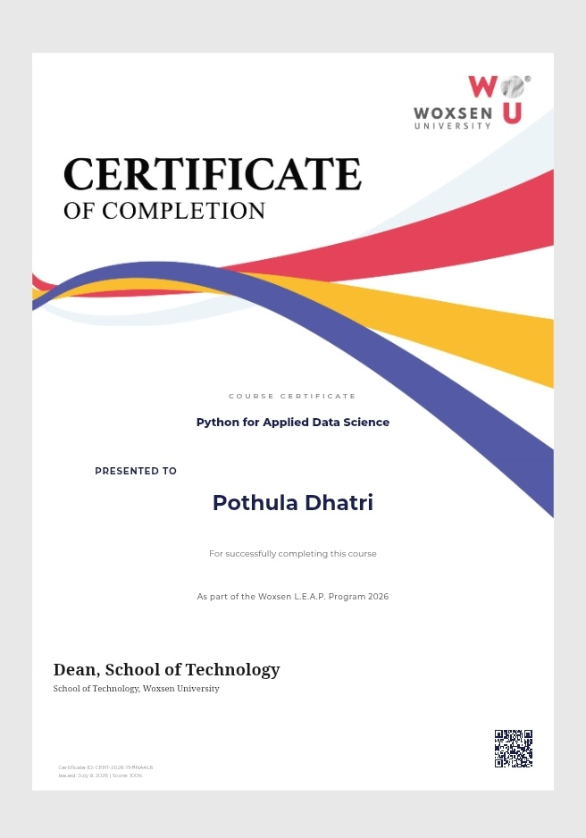
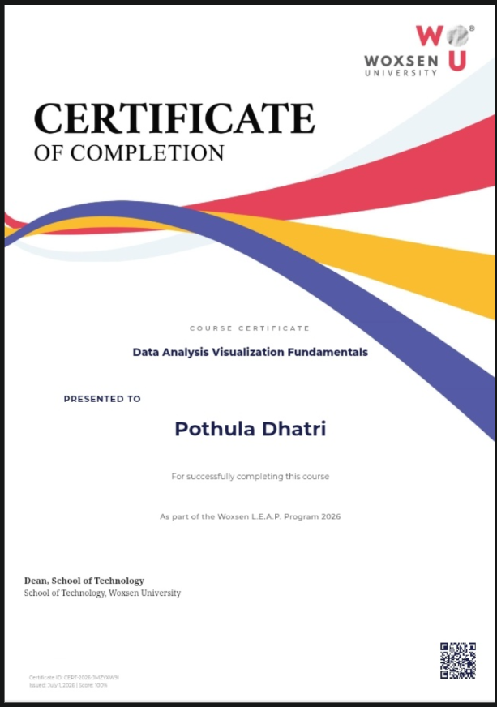
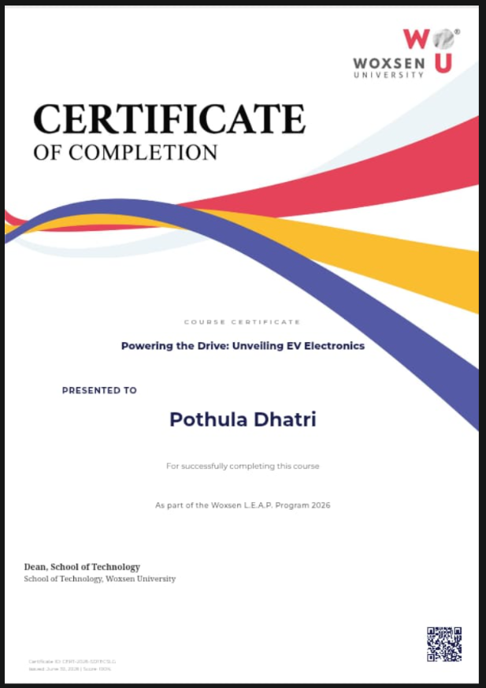
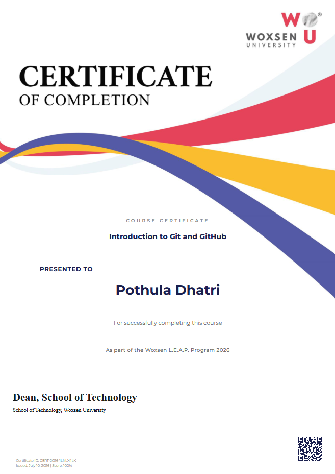

Programming
- Current Python
Academic Portfolio
Data Science Student | Aspiring Data Analyst | Python Enthusiast
I am building strong Python fundamentals while learning how data can be cleaned, explored, visualized, and used to solve practical problems.
About Me
I am a first-year B.Tech Data Science student at Woxsen University with an interest in data analytics, Python programming, and clear project documentation. I enjoy learning how raw information can become useful insights through careful analysis and problem solving.
My current focus is building a strong foundation in Python, GitHub, notebooks, and beginner-friendly data analysis workflows. I am open to internships and learning opportunities where I can contribute, ask good questions, and keep growing.
To grow as a Data Analyst by applying Python, analytical thinking, and continuous learning to real datasets and well-documented projects.
Skills
Projects
Problem Statement: Understand how student scores vary across subjects and identify basic performance patterns.
Objective: Practice data cleaning, summary statistics, and simple visualizations.
Dataset: CSV student marks dataset.
Tools Used: Python, Pandas, Matplotlib, Jupyter Notebook.
Methodology: Load data, clean missing values, calculate averages, visualize subject-wise scores.
Output: Charts and short written insights.
Key Learnings: CSV handling, descriptive analysis, and presenting findings clearly.
GitHub ProfileProblem Statement: Build confidence in Python basics through small programs and exercises.
Objective: Document learning progress with readable code and short explanations.
Dataset: Not required for beginner exercises.
Tools Used: Python, VS Code, GitHub.
Methodology: Practice variables, loops, functions, lists, dictionaries, and file handling.
Output: Organized scripts and README notes.
Key Learnings: Python syntax, problem solving, and version control habits.
GitHub ProfileCertificates

Issuer: Woxsen University
Completion Date: July 6, 2026
Credential link pending
Issuer: Woxsen University
Completion Date: July 1, 2026
Credential link pending
Issuer: Woxsen University
Completion Date: June 30, 2026
Credential link pending
Issuer: Woxsen University
Completion Date: July 10, 2026
Credential link pendingResume
A starter resume draft is included in the resume folder. Add your email, Kaggle profile, certificate issuers, and project repository links before applying.
Contact